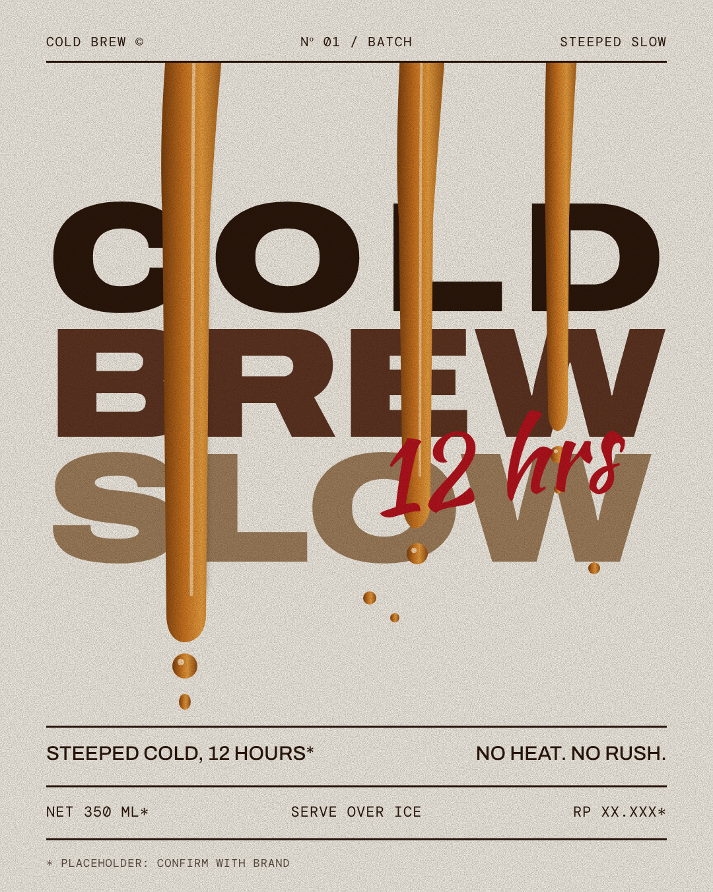

ColdBrewSlow
Steeped cold for twelve hours. No heat. No rush. Just the smooth part of coffee.
Find a cupHow it's made
- 01Grind coarse
Coarse grounds keep the cup smooth, not bitter.
- 02Steep cold
Cold water and time, about twelve hours*. No heat at any point.
- 03Pour over ice
Filter, pour, and serve over ice. Slow on purpose.
Watch it pour

The spec
Steeped12 hours*
Net350 ml*
ServeOver ice
PriceRp XX.XXX*
* Placeholder. Confirm with brand.
Find a cup
Address and opening hours to be announced. This is a demo page with placeholder brand details.